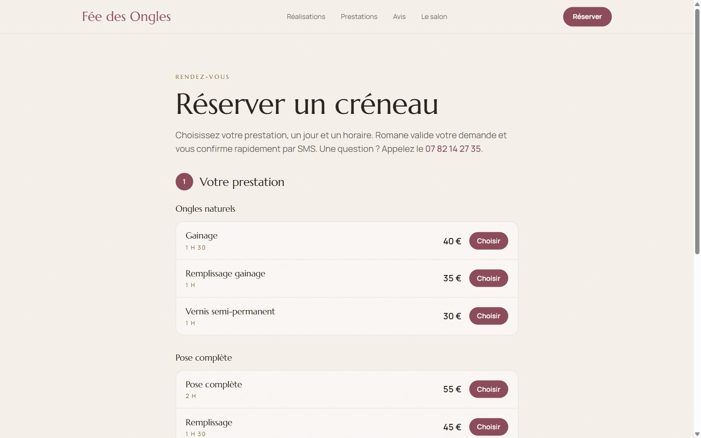

Réalisations
Réalisations
Fée des Ongles, prothésiste ongulaire à Crest
Romane travaille.
Le site prend les rendez-vous.


Le site
Une page unique, prestations, tarifs, galerie et avis
feedesongles.fr
La réservation
Créneaux calculés en temps réel, confirmation immédiate
En ligne en 14 jours